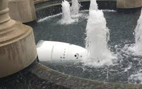

Robo comete suicidio

O caso ainda é um mistério, mas um tanto intrigante. Um robô de segurança (chamado oficialmente como Knightscope K5) contratado para ficar de olho na portaria de um prédio simplesmente abandonou o próprio posto e se jogou em uma fonte de água,
tornando-se inútil.
A foto com ele afundando viralizou e até o fabricante da máquina se manifestou acerca de como ele se "cansou de trabalhar e apelou para o suicídio" apenas cinco dias após começar a operar.
A máquina era programada
para "se locomover em locais complexos" e contava com sistema de vigilância em 360º, mas isso não a impediu de desistir da vida e tomar um banho.